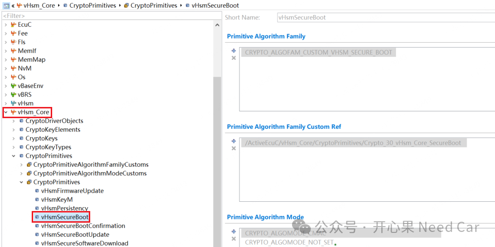
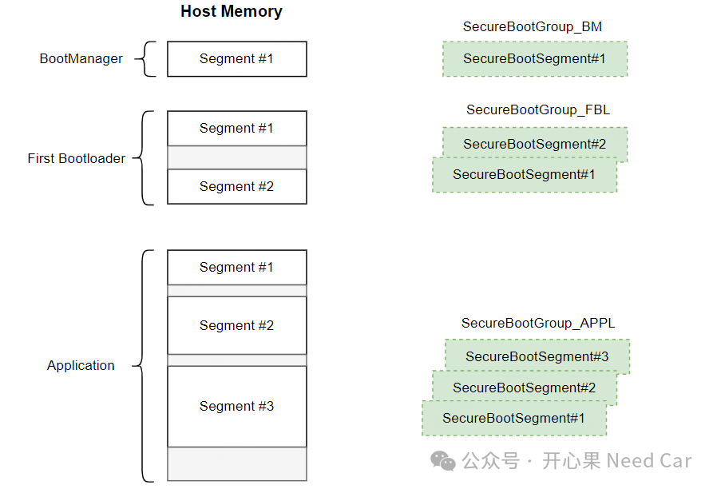
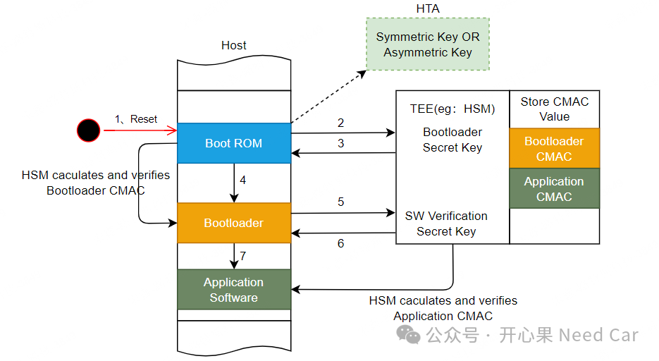
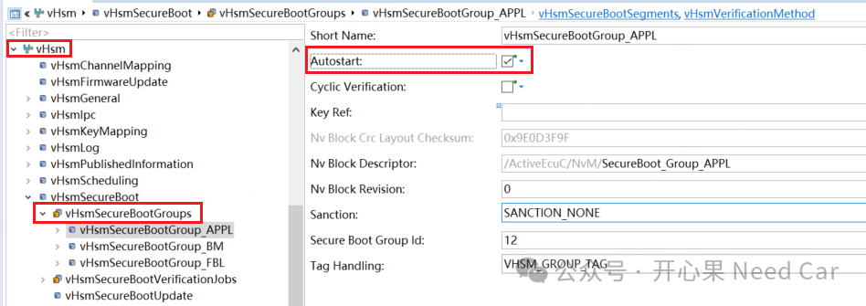
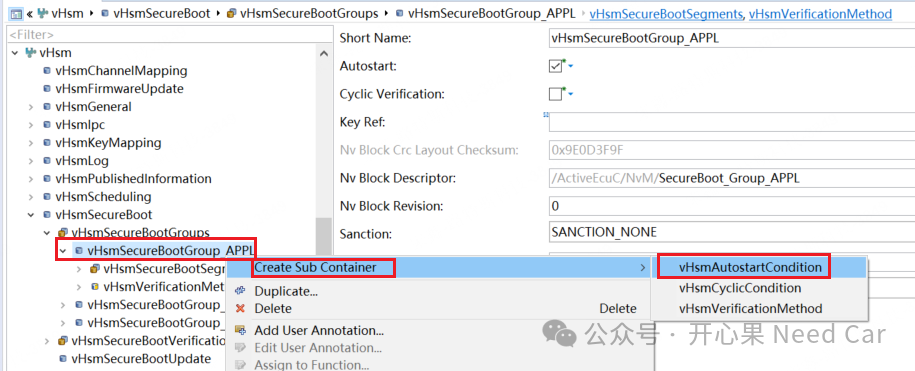

开心果 Need Car · 2025-01-07T06:36:00+08:00 · 微信原文
安全启动（Secure Boot）是讨论信息安全必不可少的部分。安全启动确保执行程序的可靠和安全。在实际的工程开发中，安全启动的细节需要留意，本文就安全启动的一些细节，做一些补充。
1、Secure Boot功能的核心模块
基于Davinci开发HSM时，开发Secure Boot功能需要vHsm_Core模块，如下所示：

安全启动的主要任务是确保执行程序的可靠性，即：程序没有被非法篡改。所以，软件启动过程中就需要对运行的每个进程进行完整性（integrity）校验。这个校验（validation）过程，一般基于Tags比对，这个Tags可以是CMAC、Hash、Signature，甚至CRC都可以。但是，需要确保Tags的安全性，即：Tags需要存储在可信区域，eg：TEE（Trused Execution Environment，可信环境）。
工程上的做法：Tags存储在HSM所属的NvM中。如果是第一次启动，自动将目标Secure Groups的Tags信息存储在NvM中。其中，Secure Groups与内存的关系如下所示：

（一）信任锚（Hardware Trust Anchor）
既然安全启动要确保执行的每个程序可信性，那么，信任链就会有一个信任的启点，即：信任锚（HTA）。工程上，一般选择对称密钥或者非对称密钥中的公钥作为信任锚，示意如下：

3、信息安全开发QA
Q2：HSM是否可以在启动阶段自动校验？
A2：可以。对需要自动校验的Secure Groups使能"Autostart"功能，配置如下：


往期精彩回顾